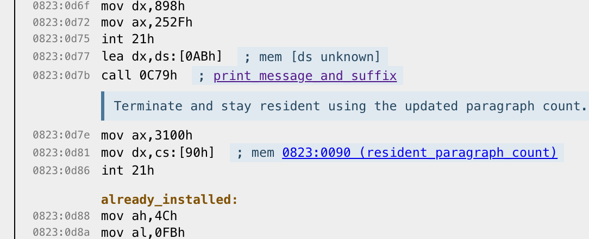

This demo uses Theseus (not AI!) to convert the sound engine from Dr. Sbaitso into a WebAssembly library. Enter text on the left, hit the Speak button to hear it.
Theseus translates DOS/win32 programs to Rust, which then can be compiled to target WebAssembly. (A recent blog post of mine goes into deeper detail on that.)
But running an old program is already well-covered by existing DOS emulators. The angle Theseus takes is about Frankensteining parts of those programs; because it translates into Rust, you can replace and rewrite pieces in Rust yourself. In Dr. Sbaitso's case, there are actually three programs:
In this demo I substituted in my own sound driver that just accumulates into a buffer. Then I also replaced the frontend program with a library interface that is exposed to WebAssembly.
I, a human, wrote all this code and text. But to understand the driver interface and implementation I have built
a disassembler that uses AI to document how the program works. It looks like this:
